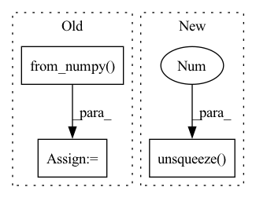

Pattern ID :7437

Before Change
mask = np.expand_dims(mask, axis=0)
if mask.shape[-2] == 1: // 1D mask
mask = torch.from_numpy(mask.astype(np.float32)).unsqueeze(0).unsqueeze(-1)
// shape = np.array(kspace.shape)
// num_cols = shape[-2]
// shape[:-3] = 1
After Change
mask = np.expand_dims(mask, axis=0)
if mask.shape[-2] == 1: // 1D mask
mask = torch.from_numpy(mask).unsqueeze(0).unsqueeze(-1)
else: // 2D mask
// Crop loaded mask.
if self.crop_size is not None and self.crop_size not in ("", "None"):
mask = center_crop(mask, self.crop_size)
In pattern: SUPERPATTERN
Frequency: 3
Non-data size: 3
Instances
Fragment ID: 24634197
Project Name: wdika/mridc
Commit Name: c2a867923121b2e496c03be5818eae6c76dfe881
Time: 2022-03-26
Author: 62050782+deepsource-autofix[bot]@users.noreply.github.com
File Name: mridc/collections/reconstruction/parts/transforms.py
M Class Name: MRIDataTransforms
N Class Name: MRIDataTransforms
M Method Name: __call__(9)
N Method Name: __call__(9)
M Parent Class:
N Parent Class:
M File Name: mridc/collections/reconstruction/parts/transforms.py
N File Name: mridc/collections/reconstruction/parts/transforms.py
M Start Line: 167
M End Line: 252
N Start Line: 233
N End Line: 253
'>
Before Change
scale = min(scale1, scale2)
out_h, out_w = in_h * scale, in_w * scale
img = sktsf.resize(img, (in_c, out_h, out_w), mode="reflect", anti_aliasing=False) // np.float64
img = self.normalize(torch.from_numpy(img)).numpy()
// img = F.interpolate(img.unsqueeze(0), size=(round(in_h * scale), round(in_w * scale)), mode="nearest").squeeze(0)
// img = tvtsf.Normalize(mean=[0.485, 0.456, 0.406], std=[0.229, 0.224, 0.225])(img)
return img_path, img, img.shape[1:]
After Change
scale1 = 600 / min(in_h, in_w)
scale2 = 1000 / max(in_h, in_w)
scale = min(scale1, scale2)
img = F.interpolate(img.unsqueeze(0), size=(round(in_h * scale), round(in_w * scale)), mode="nearest").squeeze(0)
img = tvtsf.Normalize(mean=[0.485, 0.456, 0.406], std=[0.229, 0.224, 0.225])(img)
return img_path, img, img.shape[1:]
'>
Fragment ID: 24634205
Project Name: pangkun248/faster-rcnn-pytorch
Commit Name: 9f846e1554bc021a8736389744969d0dd7f97321
Time: 2021-08-30
Author: 39581901+pangkun248@users.noreply.github.com
File Name: dataset.py
M Class Name: ImageFolder
N Class Name: ImageFolder
M Method Name: __getitem__(2)
N Method Name: __getitem__(2)
M Parent Class: Dataset
N Parent Class: Dataset
M File Name: dataset.py
N File Name: dataset.py
M Start Line: 110
M End Line: 119
N Start Line: 91
N End Line: 99
'>
Before Change
_device = next(self.parameters()).device
if isinstance(input, np.ndarray):
_input = torch.from_numpy(input).to(_device)
else:
_input = input.to(_device)
pred = self.forward(_input)
After Change
_dtype = next(self.parameters()).dtype
_input = torch.as_tensor(input, dtype=_dtype, device=_device)
if _input.ndim == 2:
_input = _input.unsqueeze(0) // add a batch dimension
pred = self.forward(_input)
pred = self.sigmoid(pred)
bin_pred = (pred>=bin_pred_thr).int()
'>
Fragment ID: 24634202
Project Name: deeppsp/torch_ecg
Commit Name: a9fb65d4abae9cfa6e51ff1425979881a154b22d
Time: 2021-10-12
Author: wenh06@gmail.com
File Name: benchmarks/train_crnn_cpsc2020/model.py
M Class Name: ECG_CRNN_CPSC2020
N Class Name: ECG_CRNN_CPSC2020
M Method Name: inference(4)
N Method Name: inference(4)
M Parent Class: ECG_CRNN
N Parent Class: ECG_CRNN
M File Name: benchmarks/train_crnn_cpsc2020/model.py
N File Name: benchmarks/train_crnn_cpsc2020/model.py
M Start Line: 75
M End Line: 80
N Start Line: 75
N End Line: 81